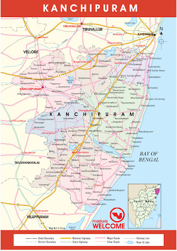

KANCHIPURUM is a temple city. KANCHIPURUM is in the state of Tamil Nadu. It is 42 miles away from Chennai the capital city of Tamil Nadu.
KANCHIPURUM is a tamil word formed by combining 2 words kanchi means brahma and puram means residantial place. This place has been ruled by the
Pallavas. This city is important to the god Vishnu. In total there are 108 temples and 15 of them are Dedicated to Lord Vishnu.
